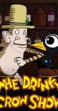

The Drinky Crow Show
List contains: 11 items, 0.4 hours.
Seasons: 1 |
Seasons: 1 |
Stephen Klancher
...has seen 1
...has seen 0 hours
...has not seen 0.3 hours

Timeline
First Unseen:
Beer Goggles (# 2)
...has seen 1
...has seen 0 hours
...has not seen 0.3 hours
Timeline
First Unseen:
Beer Goggles (# 2)
